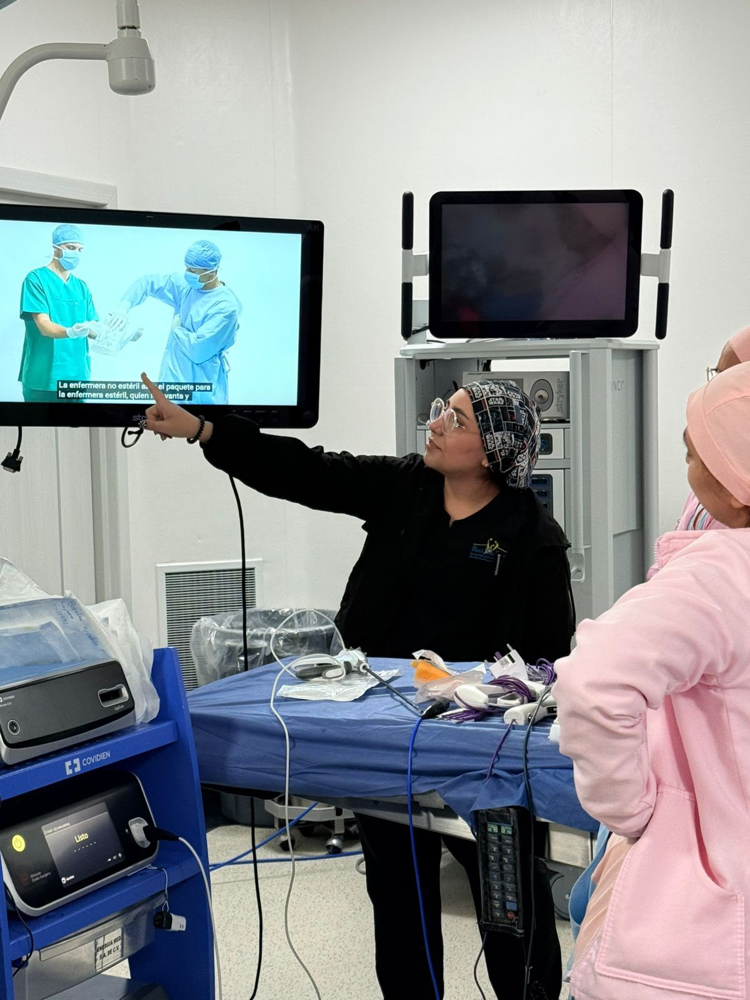
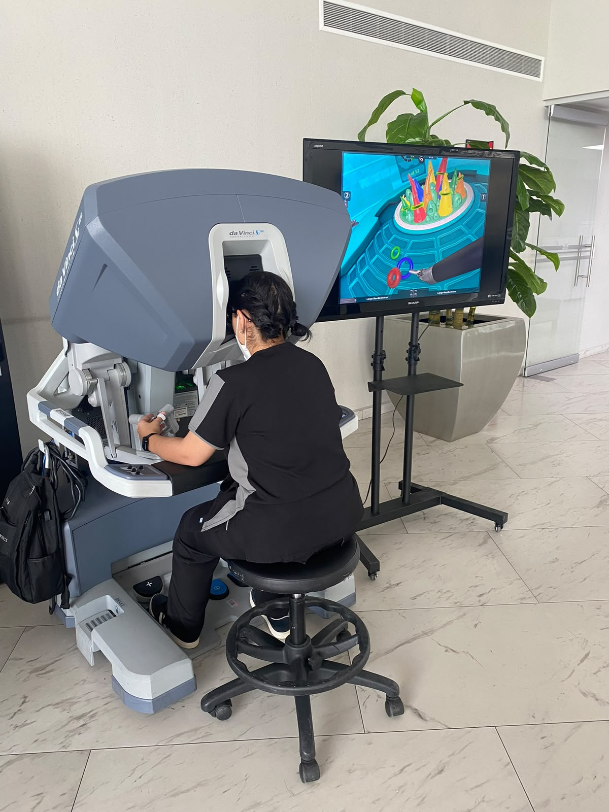
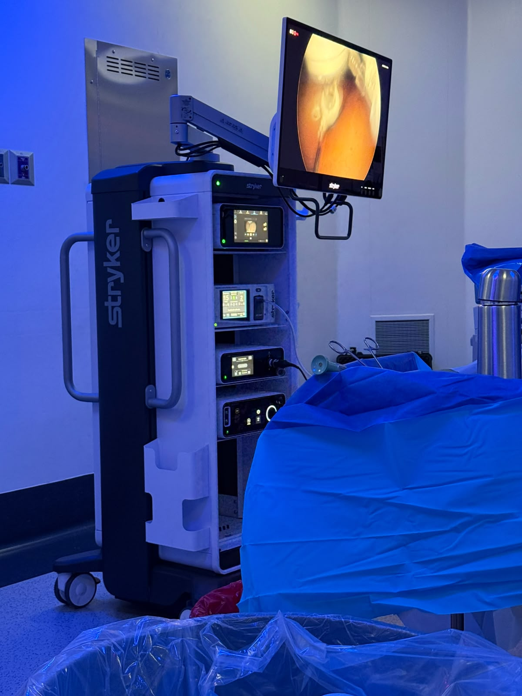
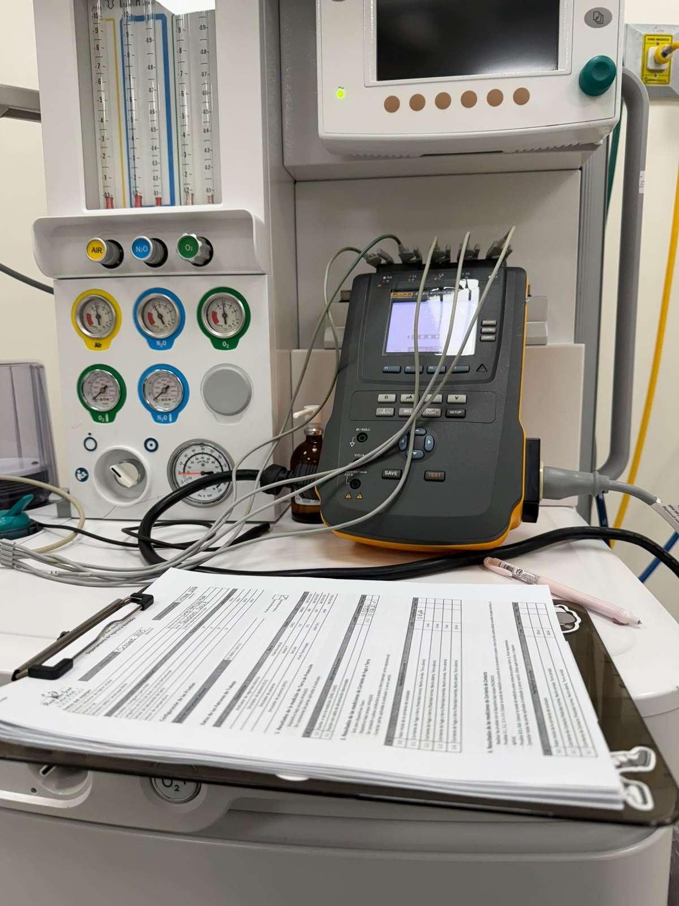
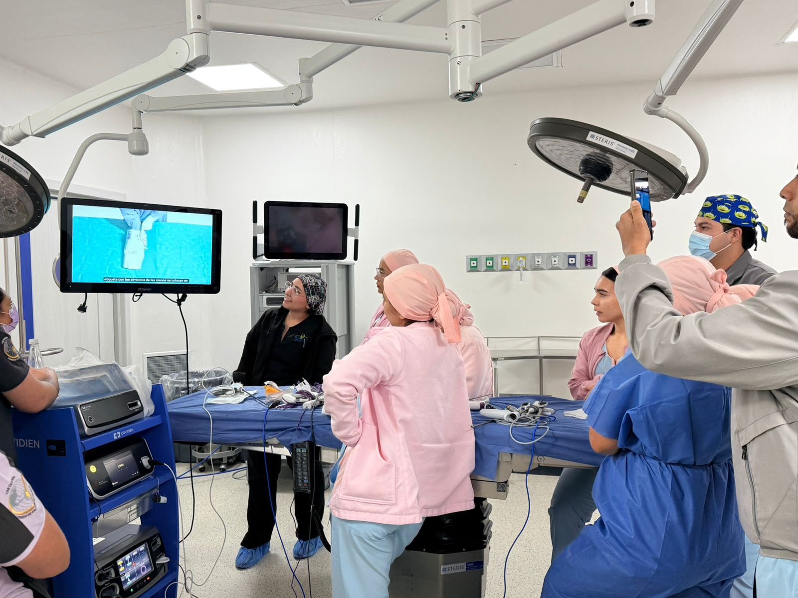
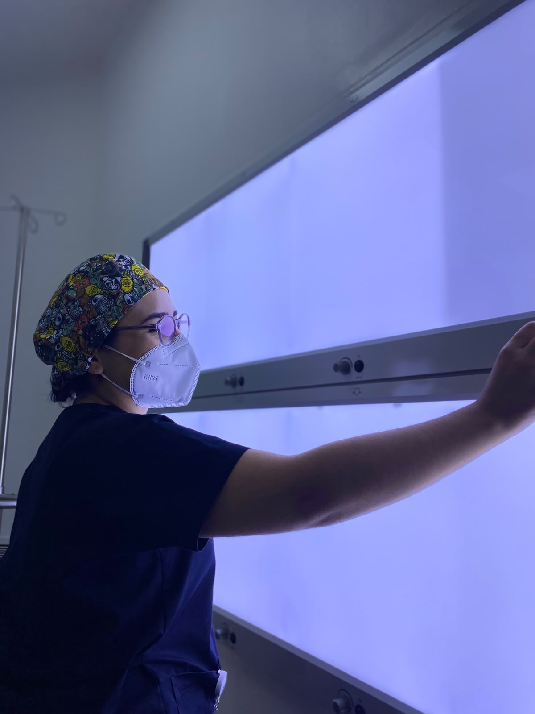
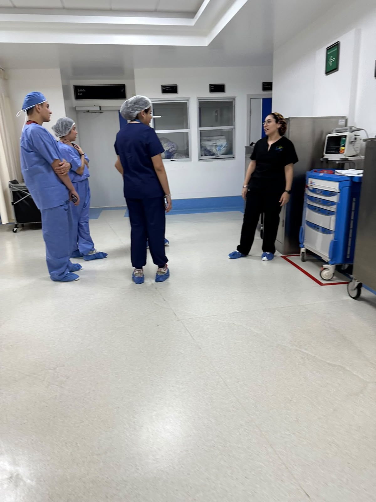

Gestión de tecnología médica
Inventario, evaluación y planeación del ciclo de vida del equipo médico: adquirir bien, usar mejor y renovar a tiempo.
Soy Areli Tejeda, ingeniera biomédica con experiencia hospitalaria y de quirófano: cirugía robótica Da Vinci, laparoscopía y microcirugía. Trabajo en hospital y ofrezco servicios independientes en la zona metropolitana de Guadalajara.
"Detrás de cada cirugía segura hay un equipo que funciona bien."
Ingeniera biomédica por la Universidad de Guadalajara (CUCEI), con experiencia en el sector hospitalario público y privado. Vivo entre quirófanos: cuido que cada equipo funcione con la precisión que un paciente merece — del mantenimiento preventivo a la cirugía robótica.

Soluciones de ingeniería biomédica para hospitales, clínicas, laboratorios y consultorios.
Inventario, evaluación y planeación del ciclo de vida del equipo médico: adquirir bien, usar mejor y renovar a tiempo.
Rutinas programadas y atención de fallas para maximizar la disponibilidad del equipo y reducir paros inesperados.
Ajuste y comprobación de parámetros críticos para que cada medición y cada terapia sean exactas y seguras.
Acompañamiento en piso: rondas de verificación, apoyo a quirófano y soporte al personal en el uso del equipo.
Documentación y procesos alineados a NOM y COFEPRIS: bitácoras, protocolos y preparación para auditorías.
Entrenamiento práctico para médicos y enfermería: uso seguro, cuidados básicos y detección temprana de fallas.
Domino el uso, la preparación y el cuidado del equipo que hace posible una cirugía segura.
Levantamiento del equipo y sus condiciones: qué tienes, cómo está y qué riesgos hay.
Propuesta clara con prioridades, calendario de mantenimiento y presupuesto.
Mantenimiento, calibración o capacitación con mínima interrupción de tu operación.
Evidencia documentada de cada intervención y monitoreo para que todo siga en norma.
Mantenimiento preventivo y correctivo, asistencia en cirugías robóticas Da Vinci, laparoscopías y microcirugías, rutinas de quirófano y máquinas de anestesia, CEyE y capacitación al personal.
Mantenimiento, instalación y revisión de infraestructura de equipos de ultrasonido.
Mantenimiento a equipo médico, control de inventario y rutinas de verificación por áreas.
Título en Ingeniería Biomédica. Proyectos de rehabilitación interactiva, nanopartículas antimicrobianas y dispositivos de rehabilitación robótica.
Un vistazo real a mi día a día con la tecnología médica.






Cuéntame qué necesita tu clínica, hospital o laboratorio y te propongo una solución.